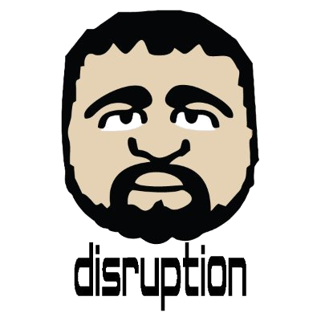
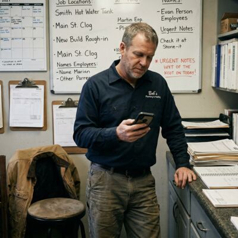

You don't have to waste weeks of your valuable time tinkering with AI to find practical ways to use it today.
That's fair. Most of the concerns people have are valid. A session isn't about convincing you. It's about clarifying the risks, helping you get started, and showing you one real thing that saves you time or makes your life easier.
Start here →You've tried ChatGPT or another tool, but it mostly feels like a slightly better search engine. That usually means nobody has shown you how to get it to work for you.
Start here →You're getting some value already, but you know a focused session with the right person could save you a lot of trial and error. You want AI agents to actually work for you.
Start here →For most people, the real value is not in becoming an expert. Its about understanding privacy issues and tool constraints. Its about less time lost to trial and error. Its about gaining clarity in how AI can help you in your everyday life.

Bob has a plumbing company with eight employees. The work is hard, the days are full, and the administrative side of the business never really stops. Even when the day is over, it does not always feel over.
What drains Bob is not the work. It is the constant mental load of trying to keep everything organized and not let anything slip. Hiring help sounds nice, but it is expensive, hard to trust, and not always realistic for a business his size. He might as well do it himself.
1. We set up one simple place for Bob to drop photos, invoices, notes, and job details from his phone or computer, without having to think about where they go.
2. We make it faster to turn messy information into usable information, so customer history, worksite details, and follow-ups are easier to find when he needs them.
3. We identify a few repeat tasks that waste time every week and build simple automations that take them off his plate.
The real win is not just saving time. It is having enough breathing room to be more present at home and finally say yes to being assistant coach for his son Hunter's basketball team.
Priya runs her own events and weddings business. She is also a busy mother, and right now she is helping coordinate her sister's wedding in India. She already uses AI regularly, so this is not about showing her the basics. It is about helping her get past surface-level use and make it genuinely useful in a season where both work and life are unusually full.
She can feel that there is more value here, but getting from "this helps me ideate and proofread emails" to "this actually saves me time" takes experimentation she does not have room for. What she needs is a few smart setups that take meaningful work off her plate right away.
1. Pull scattered inspiration photos and style notes into a clear event concepts she can react to fast.
2. Automate intake of the bride's budget and priorities into a first draft plan with real tradeoffs.
3. Build live vendor comparison sheets that catch gaps, differences, and follow-ups.
The real win is having less to hold in her head and opening up more room for the people that matter in her life.
David is a Quality Systems Manager at a 150-person engineering firm. He can see the shift coming, and he does not want to be the person who wakes up late to it. But he also cannot mess around with sensitive company information just because the internet is excited.
He wants to catch up quickly, understand the real boundaries, and start building real fluency in a way that is responsible, useful, and genuinely interesting to him.
1. Speed him through landscape of tools from major model features to privacy-preserving and open-source tools so he can catch up fast.
2. Help him start a personal agents side projects that scratch his creative engineering itch and is fun enough to inspire more learning.
3. Show him how to turn that tinkering into practical credibility, so he becomes "the AI guy" at work.
The real win is feeling ahead of the curve instead of behind it, and building confidence in how he approaches a shift he already knows is coming.
Sandra is recently retired, but not exactly slowing down. She serves as treasurer for her retirement community's HOA. She helps organize events for a breast cancer charity that means a lot to her. She stays active in her church. And on top of that she tries to get in 9 holes of golf in every other morning. We haven't even mentioned the grandkids yet.
She can tell AI could be useful, maybe even fun, but every time she looks into it she runs into jargon, hype, and too many opinions. What she needs is not more noise. It is someone to make it simple, practical, and worth using in the parts of life that already matter to her.
1. Help her draft clear HOA updates, announcements, and board communication without staring at a blank page.
2. Show her how reliably AI can review changing local laws and redline legal agreements.
3. Communicating better with her doctor about an ailment that has been bugging her for a year, but they can't seem to nail down the issue.
The real win is not becoming technical. It is feeling more capable, less intimidated, and more free to spend her energy where she actually wants it to go.
Different people come in with different friction. But the pattern is usually the same: once it clicks, AI stops feeling like a weird futuristic thing you should probably understand someday, and starts feeling like something genuinely useful in your actual life.
This is not a generic walkthrough and it is not a lecture. We start with where you are, what feels stuck, and what would actually be useful. From there, we look for the fastest path to something real.
First we set the stage. We start with your questions, your comfort level, and any concerns you have about privacy, tools, or where to begin.
We look for one or two practical ways AI can help right away, based on your actual life or work.
Once we have a couple of example scenarios, we go deeper into walking through your real life use cases.
I review the session notes and send you a custom plan to unlock 5-10 hours a week or more.
My measure of success is that you leave with more clarity and a practical way forward that feels like it fits your life. I measure this in two ways. How much time do you feel like you saved vs tinkering to figure it out? How much time have you saved per week using our solutions?
A lot of people talking about AI are really talking about content. More posts. More hype. More "look what this tool can do." That is not what I do.
I come at this as an operator. I have spent years building businesses, working inside messy real-world constraints, and figuring out how to make things actually move. I was using machine learning and language tools in real work before most people were paying attention to AI, and I use AI now the same way I approach everything else: as a tool to reduce friction, improve judgment, and get to something useful faster.
That matters, because most people do not need an AI evangelist. They need someone who can:
I am not here to make you feel behind.
I am not here to sell you hype.
I am here to help you get oriented, get useful wins, and leave with a clearer sense of what is worth doing next.
In a single focused session, we can get clear on what is worth using, what is not, and how you can immediately save time by using AI better.
After the session, I review everything and send a customized follow-up plan with:
About Disruption Joe
This started with people close to me. I would sit down with a friend or family member and in a short conversation they would go from curious or skeptical to seeing real value. I have been using AI deeply enough in my own work that I can help people cut through the noise fast.
I've been passionately working on an open source agent notation project, but open source does not pay the bills. Rather than filling my time clocking in for another startup, I'd rather help everyday people. That is why I'm here. I am not an internet guru. I work primarily through referrals and people I meet at events.
Even though I've been working with AI in my day-to-day career for years, the deeper thread of my work has always been helping teams get unstuck, create clarity, and move forward. This brings me to my offer for teams:
A lot of teams are not missing talent or effort. They are stuck in the drag of unclear priorities, messy communication, slow decisions, or too much friction between people and the work.
If your team is struggling to remove ambiguity and produce tangible results, I may be able to help. Unlocking teams has been my primary job for the last decade.
Learn about team and leadership work →